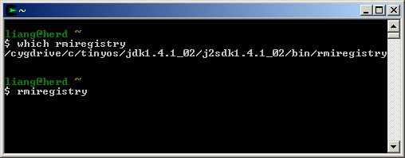
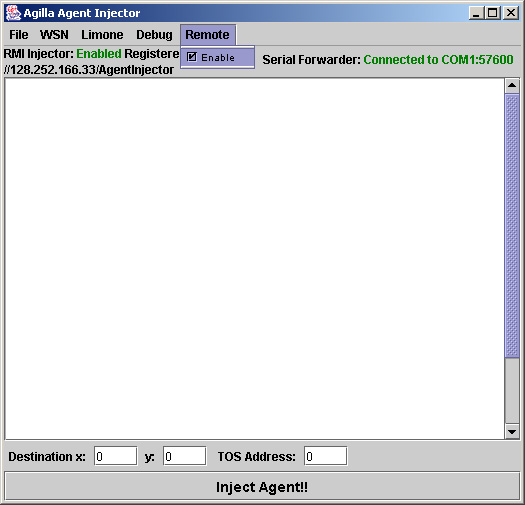

Last Updated on November 3, 2005 4:23 PM .
Agilla allows a remote user to connect to the local AgentInjector and inject an agent via RMI. To do this, first start an Agent Injector locally as usual by typing ri if you have the Agilla aliases setup, or
cd /opt/tinyos-1.x/tools/java
java -Djava.security.policy=java.policy edu.wustl.mobilab.agilla.AgentInjector -comm [port]:57600 -d
if you do not where [port] is the port the mote programming board is attached to (e.g., COM1)
Open another prompt and type rmiregistry. This will start the rmi regsitry running on the local pc. You should see something like the window below.

In the AgentInjector window, click on Remote and select "enable" as shown below.

This will register the injector with the RMI server and allow a remote user to inject agents. The address of the RMI server is shown in the upper-left corner. In this case, it's 128.252.166.33. The remote user must know this address to remotely inject agents.
On the remote computer, run the injector using ri_rmi if you have the Agilla aliases setup, or
cd /opt/tinyos-1.x/tools/java
java -Djava.security.policy=java.policy edu.wustl.mobilab.agilla.AgentInjector -comm RMI:[address] -d
if you do not, where [address] is the address of the RMI server.
The Agent Injector on the remote host will automatically connect to Agent Injector on the local host. You can inject an agent from the remote host by opening an agent and injecting it as if it were local.